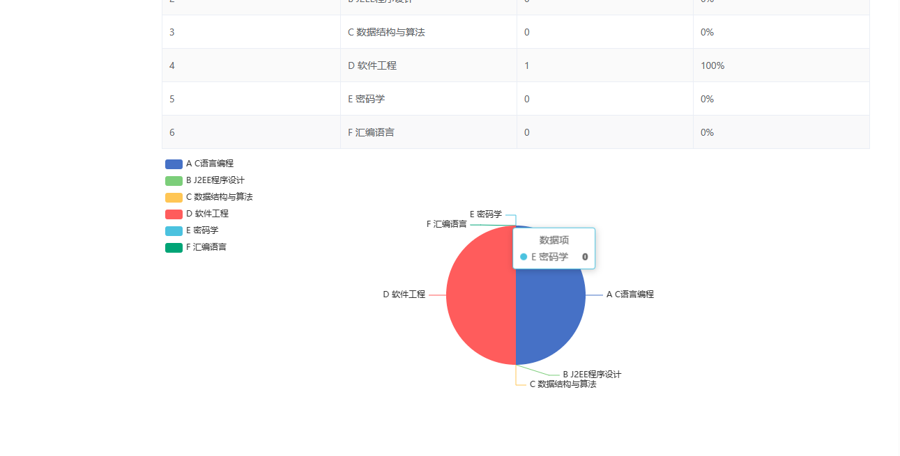

SpringBoot+vue 问卷调查系统
202
问卷调查系统基于 SpringBoot+vue 进行开发。系统分为管理员和普通用户两种角色，管理员主要是用来添加问卷，普通用户主要填写问卷。
管理员：
-
问卷查看
-
问卷删除
-
新增问卷
-
添加问题
-
删除问卷
-
发放问卷
-
结束问卷
-
用户管理
-
图表统计
普通用户：
二、技术框架
-
后端：SpringBoot，Mybatis
-
前端：vue，elementui
三、安装教程
-
解压目录后，前台项目在 questionnaire-web 目录中，idea 打开 questionnaire-web 目录，后台项目在 questionnaire 目录中，新开一个 idea 窗口打开 questionnaire 目录
-
在后台 idea 中配置 jdk 环境
-
在后台配置 maven 环境并下载依赖
-
新建数据库，导入数据库文件
-
在 application.yml 文件中将数据库账号密码改成自己本地的
-
在 idea 中进入前台文件夹 questionnaire-web。在 idea 底部打开
Terminal
，然后分别输入命令
npm install
下载依赖。等到进度条走完后在
Terminal
中分别输入命令
npm run serve
启动前台项目（需要安装 node 环境，本机测试用的 node 版本为 v12.22.12）。
-
启动后台 springboot 的项目
-
浏览器输入
http://localhost:8080
进行访问
-
管理员账号密码 admin/123456，普通用户账号密码 李明/123456
四、项目截图
